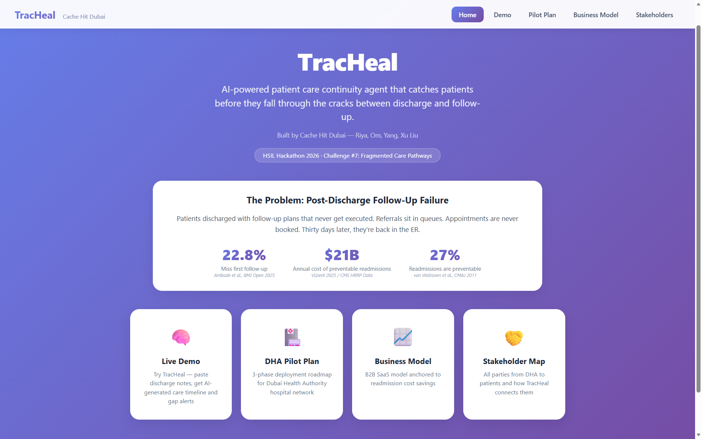
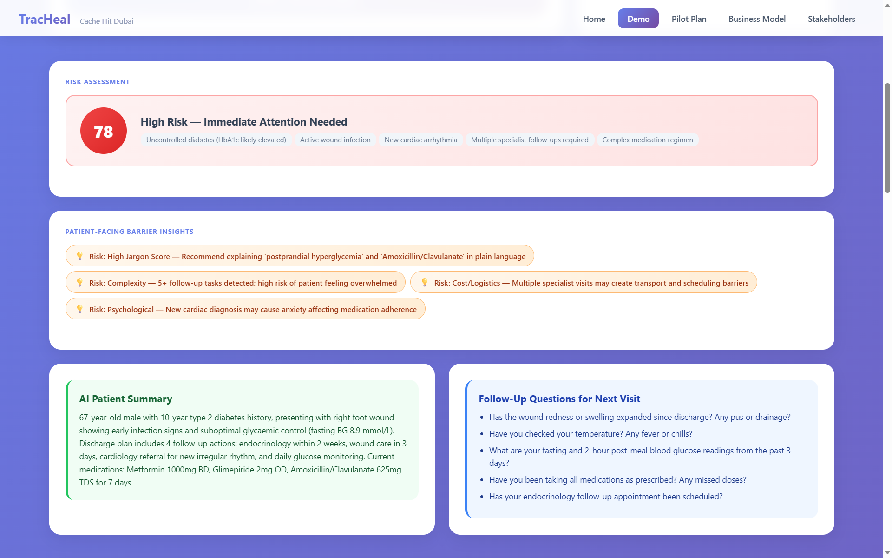

A clinical decision-support MVP my team built and deployed in 48 hours at the Harvard HSIL Hackathon (Dubai hub, April 2026). It reads hospital discharge notes and flags the follow-up gaps that put patients at risk after they go home.
LLM application · Structured outputs · Fallback chain · Flask · CI smoke tests · Vercel

Many readmissions start with a missed follow-up: an appointment never booked, a medication not reconciled, a warning sign nobody explained. Care coordinators cannot read every discharge note closely, so the risk is easy to miss.
TracHeal takes a discharge note as text or PDF and returns a structured risk assessment. It includes a risk score and level, barriers and recommended interventions. It also lists symptom checks, escalation triggers, the drivers behind the risk and its sources. A clinician reviews every output.

Figure 1. TracHeal's output for a synthetic discharge note: a risk score with its drivers, barriers the patient may face, a plain summary and questions for the next visit.
I led the four-person team. I designed the output schema and the risk framework, integrated my teammates' components into one product, and handled deployment. Om Pawar built the retrieval prototype, Wenhui Yang the PDF pipeline, and Xu Liu the risk-driver analysis. I also drafted the pilot plan, business model and stakeholder map.
A Flask backend runs as a serverless function behind a static frontend on Vercel. LLM calls go through a fallback chain: Google Gemini first, then DeepSeek, then a deterministic backup, so the demo never breaks if an API fails. The interface shows which mode is running, and a smoke-test suite runs in CI.
It is a 48-hour MVP. The demo uses synthetic patient data and external LLM APIs. A real pilot would need models hosted inside the institution, authentication and a compliance review. Retrieval is simple keyword matching, and the risk scores have not been clinically validated.